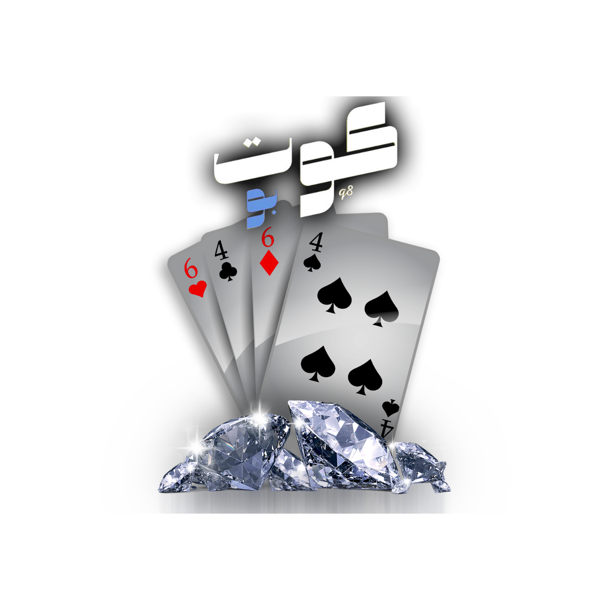
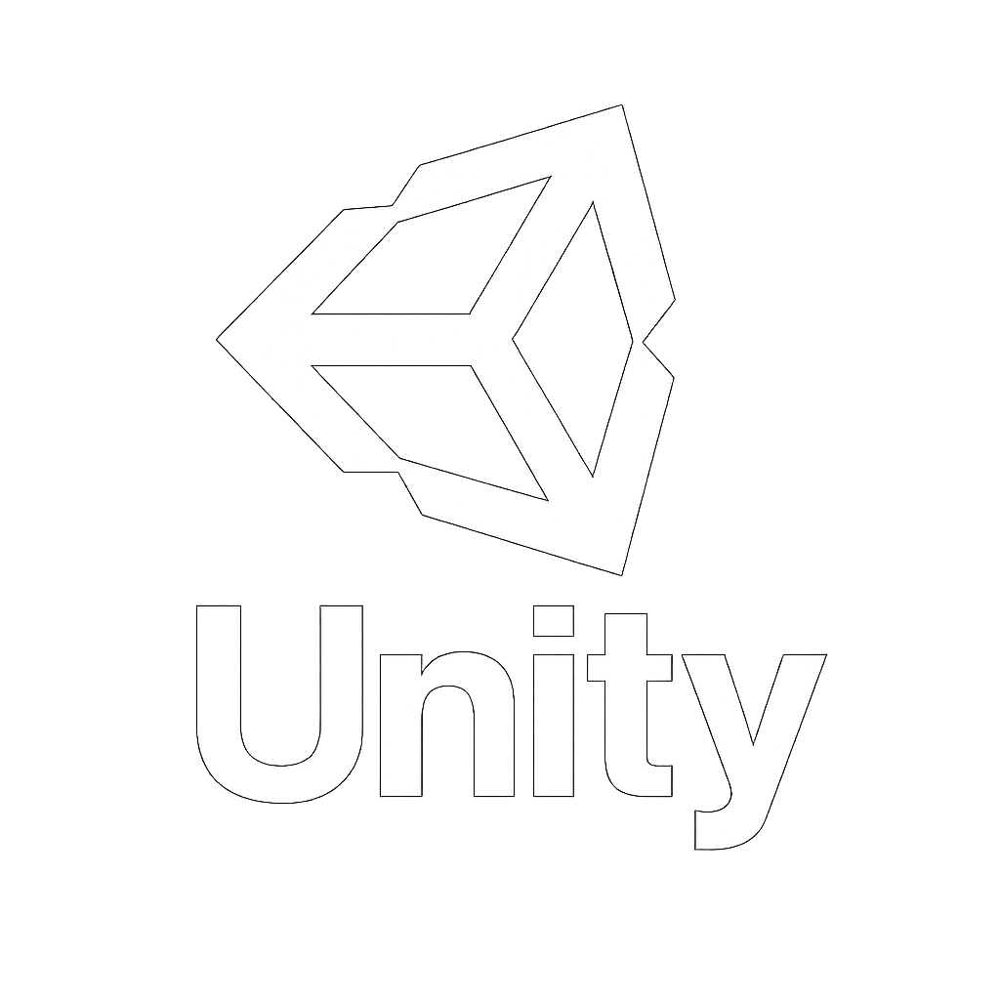
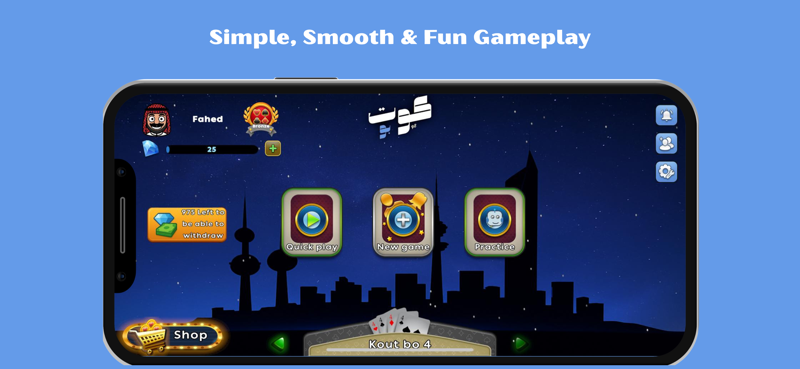
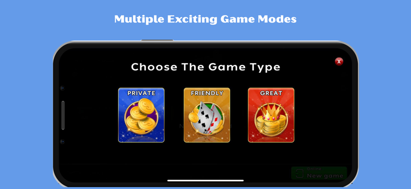
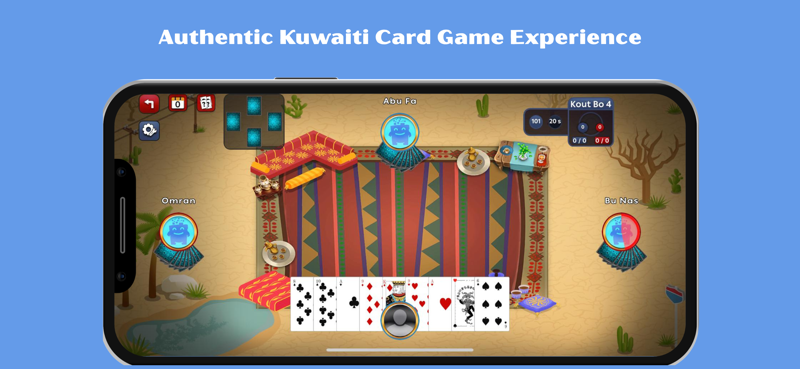

عِش تجربة "KoutQ8" — النسخة الرقمية للعبة الورق الكويتية المحبوبة! نافس لاعبين حقيقيين أو تحدّى ذكاء اصطناعي متطور. بأسلوب لعب سلس وقوانين أصلية، تعيد KoutQ8 أجواء القعدات الكويتية الكلاسيكية إلى الحياة.
العب “Kout Bo 4” و “Kout Bo 6” كما تتذكرها، بتحكمات سهلة ورسوميات سلسة.
تدرّب في أي وقت وأي مكان ضد بوتات ذكية تحاكي أساليب اللعب الواقعية.
انضم إلى مباريات مباشرة مع لاعبين حقيقيين واستعرض مهاراتك الاستراتيجية.
اكسب الألماس من خلال الفوز وحوّله إلى أموال حقيقية بشكل آمن داخل التطبيق.
واجهة نظيفة وخالية من الإلهاء تركز على اللعب والانتصار.

تم التطوير باستخدام Unity3D

